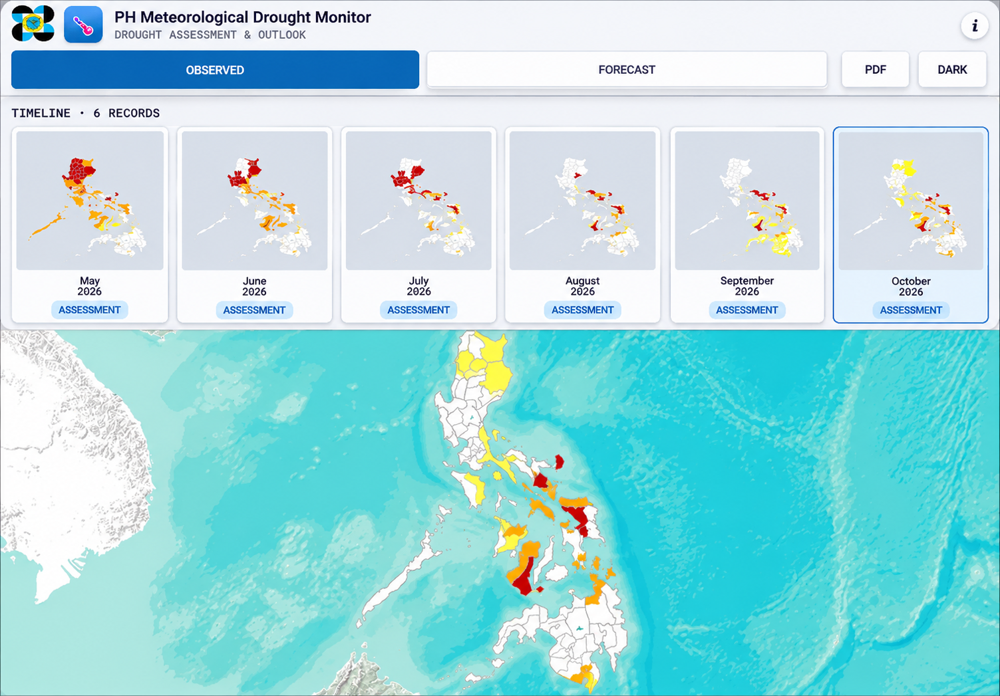

Explore the Philippines
Select a province on the map to see its drought assessment and outlook.


Drought Monitoring in the Philippines
Understanding Drought Conditions
Explore the official PAGASA Drought Caster to identify provinces experiencing drought, dry spells, and dry conditions. The interactive map presents observed drought assessments and available outlook information to help users understand changing rainfall conditions across the Philippines.
What You Can Discover:
- Drought-affected provinces and locations
- Observed dry conditions and drought assessments
- Available drought forecasts and outlooks
- Different drought classification levels
- Province-specific assessment and outlook data
Drought Classification
PAGASA uses the following categories:
- Not Affected
- Dry Condition
- Dry Spell
- Drought
- No Data
Latest reported drought assessment
5Drought provinces
11Dry spell provinces
10Dry condition provinces
Source: PAGASA Monthly Agroclimatic Review and Outlook, October 2026 assessment. PAGASA